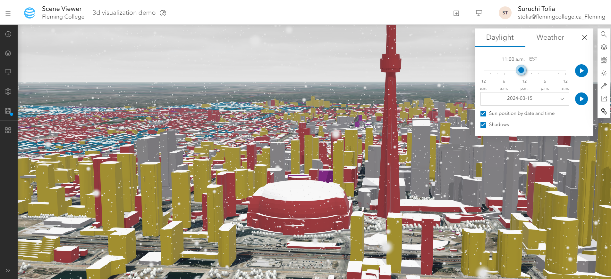
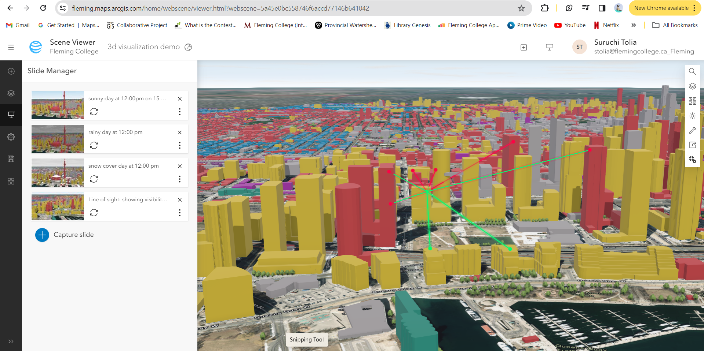
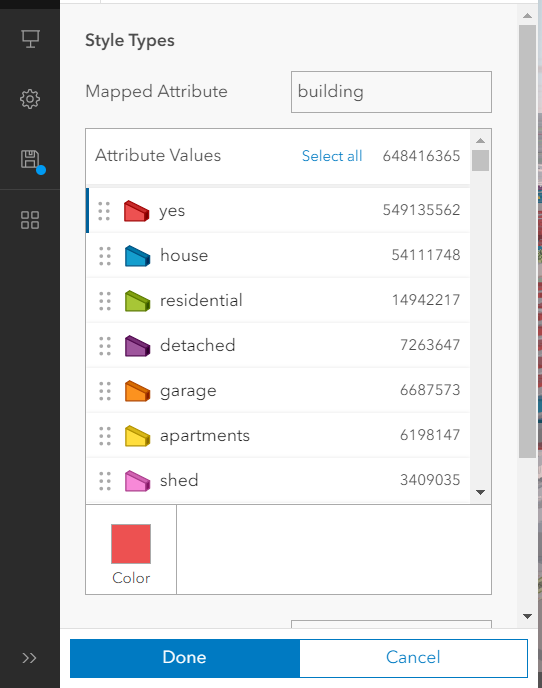
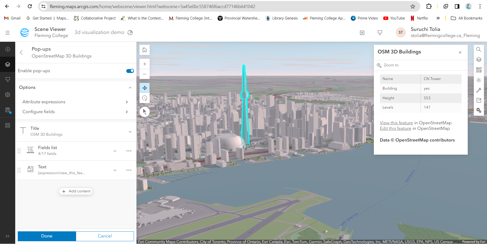
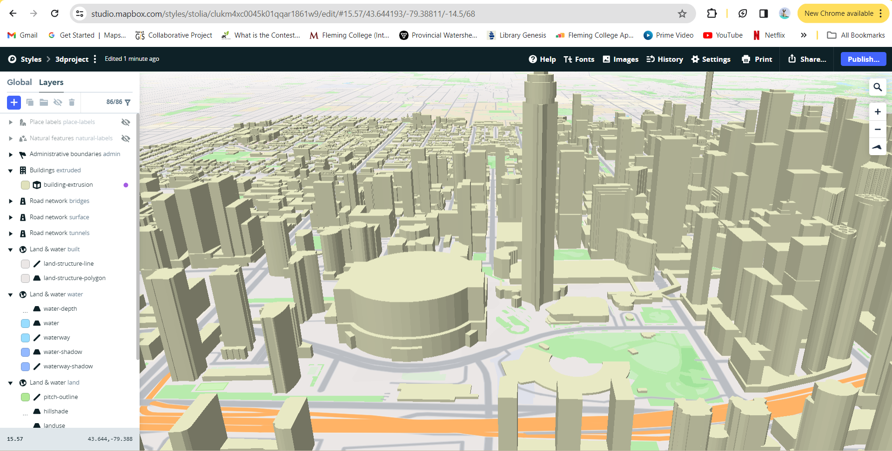
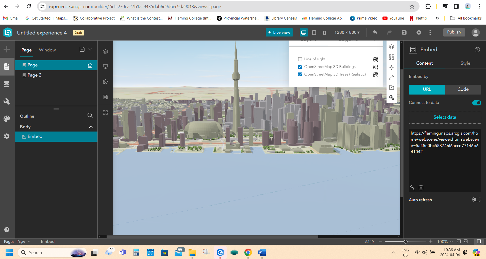

The website is created for educational purpose only and These links may be unusable in the future due to licensing expirations.
The content diplayed here may not be appropriate. Just keep scrolling and explore different ArcGIS Products.
Thank you!
Team - Pocket 3D
ArcGIS Scene Viewer
ArcGIS Scene Viewer is an online application that allows users to explore and interact with 3D geographic information in their web browsers.
With Scene Viewer, users can visualize terrain, buildings, and other geographic features.
It offers tools for navigation, measurement, and analysis, allowing users to gain insights and make decisions based on their 3D data.
Scene Viewer is part of the ArcGIS Online platform, which makes it easy to access and share 3D content with others.
| Pros |
Cons |
| Scene viewer has a user friendly easy to use interface. |
3D visualization may take longer time to render depending upon the dataset used. |
| Scene viewer provide powerful analytical capabilities for spatial analysis. such as line of sight, slice, measuring distance, , areas ,and height in 3D space. |
|
| Scene viewer displays high quality 3D visualization with lighting, shadows, weather conditions which gives users realistic visual experience. |
|
| Users can import data from various sources or can access Esri's extensive collection of curated dataset. |
|
Process
- First, I logged in to my ArcGIS account and open Scene Viewer.
- Then, I started a new scene and picked a basemap that fits the best for my plan.
- Next, I added open street map 3d building and open street map 3d trees data layers from Esri living atlas to the map.
- After that, I adjusted the view to get the perfect angle and zoom level.
- Then I added slides to show different seasons, played with measurement tools.


- I also changed colors and symbols to make the map look nice, and even add pop-ups to
show extra information when someone clicks on something.


- Finally, when everything looked good, I saved my work and share it with others.
Other Explorations
Mapbox

Mapbox is a versatile platform that helps users to create custom maps and location-based applications. With Mapbox, you can access a wide range of tools and services for designing, visualizing, and analyzing spatial data. Whether you're building interactive maps for websites, mobile apps, or data visualization projects. Mapbox provides powerful capabilities to customize map styles, add geospatial data layers, and incorporate advanced features like real-time updates. Additionally, Mapbox offers SDKs and APIs that allow developers to integrate mapping functionality seamlessly into their applications.
| Pros |
Cons |
| Mapbox has user friendly interactivity with 3D maps, such as zooming, roatating, and tilting which provide a more dynamic experience. |
Comparaed to ArcGIS products, Mapbox has relatively limited analytical capabilities. |
| Mappbox is suitable for integrating 3D maps into custom web and mobile applications. |
mapbox has little learning curve for the beginners. |
| Mapbox allows users to utilize wide range of data format and sources. |
|
Process
- First, I sign in to my Mapbox account and open the Mapbox Studio application.
- Then, I created a new project and select the 3D map style you want to use as a base.
- Next, I used the existing building layer in the mapbox studio. one can add their own data layer by uploading their data (MBTiles, KML, GPX, Geojson, Shapefile, CSV files).
- Then I customized the appearance of the layers by adjusting colors, symbols, and labels.
- After that, I changed the building polygon to 3D buildings by changing the building layers type from fill to the fill extrusion (an extrusion 3d polygon) under select data tab and under its style tab filled the height formula: height.
- Once I was happy with my 3D map, I published it.
- One can share it with others by embedding it on websites or integrating it into mobile apps.
What Didn't Work
The another limiting issue I felt in the map box was that the 3d buildings can only be visible from one extent.
In this building layer the zoom extent by default was set to minimum 15 and maximum 22.
I tried to see if I can represent the terrain features in the map box.
But I found that while I can adjust the terrain elevation by giving the height and styling it by data condition,
but still could not show the complex terrain features properly.
Dashboard

ArcGIS Dashboard is a tool that lets user create dynamic, interactive displays of their data. It can create customized displays using maps, charts, graphs, and other visual elements to monitor trends, track performance, and communicate insights. ArcGIS Dashboard helps user make informed decisions by presenting your data in a clear and intuitive way.
| Pros |
Cons |
| Dashboard with 3D visualization helps in interactive exploration of spatial data. It helps users to manipulate 3D scene, zoom in and out, rotate the view, and interact with individual data points. |
dashboard leads to slower loading times, shows high regarding 3D visualization if the data is large. |
| 3D visualization can take up significant amount of the screen within the dashboard, which leaves less space for other dashboard components or visualizations. |
3D visualization can take up significant amount of the screen within the dashboard, which leaves less space for other dashboard components or visualizations. |
Process
- First, I logged in to my ArcGIS Online account and navigate to the Dashboard section.
- Then, I created a new dashboard project and selected a layout that includes a 3D map component.
- Next, I added my 3D map layers by connecting to existing web maps.
- Later I customized the appearances of the map by adjusting symbology, labels, and basemaps to best represent my data.
- I also configured the map settings where I enabled the features like pop-up, legends, basemap switcher, search, find my location pan/rotate and zoom in/ out.
- Additionally, I incorporated interactive elements like filters and selectors to allow users to explore the 3D map dynamically.
- We can also modify the appearance od the header tab by adding logos.
- Finally, once my dashboard was complete. I published my dashboard and share it with others.
Experience Builder

ArcGIS Experience Builder is a user-friendly web application that allows users to create custom web experiences without coding.
It seamlessly integrates with ArcGIS Online, enabling users to incorporate spatial data and services into their web applications.
With drag-and-drop functionality and a wide range of templates and widgets, Experience Builder helps users to design interactive and engaging web experiences.
It is a versatile tool for storytelling, data visualization.
| Pros |
Cons |
| Experience Builder provide pre built templates, widgets, and components that can be customized through visual interface. Therfore, it requires no coding. |
Experience Builder had the most learning curve. User may require more time and efforts to understand the tools interface, functionality, and workflow. |
| Experience Builders helps user to create interactive 3D experiences with features. |
Experience Builder have limited data integration with different data formats and sources. Users may found challenges when trying to import external data into their 3D experiences. |
Process
- First, I logged in to my ArcGIS Online account and opened Experience Builder.
- Then, I started a new project and choose a blank layout.
- Next, I added my 3D spatial data to the map widget by connecting through URL.
- You can customize the appearance of the map by adjusting symbology, labels, and basemaps to suit your needs.
- Experience Builder offers various tools for adding additional elements like text, images, and buttons to enhance your 3D map.
- I personally used menu widgets and buttons to create my Experience Builder.
- Once I finished designing and previewing.
- I published my project and shared it with others.